Инструменты и приспособленияДля технического обслуживания автомобиля и выполнения наиболее распространенных ремонтных работ достаточно иметь комплект универсальных инструментов, основу которого должен составлять стандартный набор торцовых ключей со сменными головками. Желательно, чтобы он был максимально полный. Недостающие инструменты можно приобрести отдельно (см. ниже). Специальные инструменты (специализированные ключи, съемники, измерительный инструмент и другие приспособления) требуются при выполнении только некоторых ремонтных работ, а потому используются нечасто. Приобретать их можно по мере необходимости. В то же время желательно иметь ареометр, мультиметр, штангенциркуль (последние два могут быть полезны не только при ремонте автомобиля, но и в быту). Следует учитывать, что ряд операций выполнить без специального инструмента затруднительно, а иногда и невозможно. Некоторые виды работ выполняются с использованием средств индивидуальной защиты (подробнее см. «Меры безопасности при обслуживании и ремонте автомобиля»). Поэтому наряду с набором инструментов приготовьте перчатки или рукавицы, защитные очки или маску (прозрачный щиток, полностью закрывающий лицо). УНИВЕРСАЛЬНЫЙ ИНСТРУМЕНТ 1. Набор торцовых ключей со сменными головками. В набор обязательно должен входить комплект сменных головок размерностью от 10 до 32 мм, под соединительный квадрат 1/2" (0,5 дюйма). Желательно, чтобы в этом комплекте был весь ряд рабочих профилей метрического размера, а также специальная «свечная» головка на 16 или 21 мм (глубокая головка, внутрь которой вставлено резиновое кольцо, предназначенное для удержания свечи зажигания при ее извлечении). Также желательно, чтобы был второй комплект головок размерностью от 6 до 14 мм под меньший посадочный размер (1/4") и дополнительный набор глубоких головок на 8, 10, 12 и 13 мм, для отворачивания гаек с длинных шпилек. Очень удобно работать, если в наборе есть воротки с храповым механизмом (трещотки). Они позволяют быстро отворачивать и заворачивать крепежные детали. Во избежание повреждения храпового механизма не используйте трещотки для ослабления и окончательной затяжки болтов и гаек. Поскольку в автомобиле используются болты TORX, а также болты с внутренним шестигранником, в наборе следует иметь комплекты соответствующих головок и насадок, а также насадки с рабочим профилем под крестовые и шлицевые отвертки. 2. Вороток с шарниром и длинной ручкой. Он необходим для отворачивания резьбовых соединений большого диаметра, когда необходимо приложить значительные усилия (например, при отворачивании гайки ступицы переднего колеса). 3. Комплект комбинированных ключей (рожковые и накидные) размерностью от 6 до 32 мм. Желательно, чтобы в наличии был весь ряд ключей метрического размера (через 1 мм). Рожковые ключи не предназначены для приложения значительных усилий к крепежным элементам, так как при этом сминаются грани болтов и гаек. Затягивать или ослаблять затяжку такими ключами следует только в случае, когда невозможно это выполнить с помощью торцовых или накидных ключей. 4. Набор накидных ключей. Комплект комбинированных ключей полезно дополнить накидными изогнутыми ключами самых ходовых размеров: на 10, 12, 13, 15, 17, 19, 22 и 24 мм. 5. Комплект шестигранных ключей размером от 2 до 12 мм. 6. Динамометрический ключ. Предназначен для окончательной затяжки резьбовых соединений с регламентированным моментом. 7. Набор крестовых и шлицевых отверток, различающихся по размеру и длине. Очень удобно, если при выполнении ремонта в наличии будет большой выбор отверток с лезвиями различной длины и ширины. 8. Молотки. Желательно иметь несколько молотков со стальным бойком весом 200, 500, 1000 г, и, кроме того, — с пластмассовым или резиновым бойком. 9. Кусачки (бокорезы), пассатижи, плоскогубцы с загнутыми губками. 10. Шило. И. Выколотки из мягкого металла (латунные, медные, алюминиевые прутки) для выбивания осей, валов. 12. Набор выколоток и бородков из стали для выбивания штифтов, шплинтов и т. п. 13. Зубило. Лучше приобрести два или три зубила с разной шириной лезвия. Желательно иметь и длинное зубило для работы в труднодоступных местах. 14. Ножовка по металлу, набор надфилей и напильников. 15. Монтажная лопатка. Следует иметь набор из двух-трех лопаток разной длины, которые можно использовать как рычаги. 16. Раздвижные пассатижи. 17. Металлические щетки. 18. Электродрель с набором сверл по металлу (до 013 мм). 19. Слесарные тиски. Тиски должны быть надежно закреплены на верстаке. СПЕЦИАЛЬНЫЕ ИНСТРУМЕНТЫ И ПРИСПОСОБЛЕНИЯ 1. Подкатной гидравлический домкрат. Штатный домкрат часто или неудобен, или просто бесполезен при выполнении некоторых работ. 2. Подставки под автомобиль, регулируемые по высоте и с допустимой нагрузкой не менее 1 т. Желательно иметь четыре такие подставки. 3. Противооткатные упоры (не менее 2 шт.). 4. Двухсторонние ключи для штуцеров тормозной системы на 8 и 10 мм. Накидной ключ с прорезью. Зажимной ключ позволяет отворачивать штуцеры с изношенными гранями. Для того чтобы надеть ключ на штуцер тормозной трубки, необходимо вывернуть стяжной болт. Накидной ключ с прорезью позволяет более оперативно выполнять работу, однако такой ключ должен быть изготовлен из качественной стали с соответствующей термической обработкой. 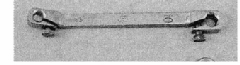
5. Ключ специальный для регулировки натяжения ремня привода ГРМ. 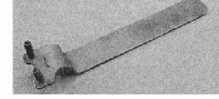
6. Ключ с восьмигранной головкой на 24 мм для разборки рулевого механизма. 7. Вороток плоский с храповым механизмом иод съемные наконечники. Может использоваться в труднодоступных местах как плоская реверсивная отвертка. 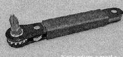8. Съемники для снятия стопорных колец. Существует два типа таких съемников: для извлечения стопорных колец из отверстий и для снятия стопорных колец с валов, осей, тяг. Такие съемники бывают с прямыми и изогнутыми губками 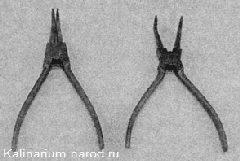 9. Спец. клещи для установки хомутов 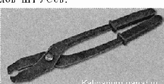 10. Съемник для вы прессовки пальцев шаровых опор и наконечников рулевых тяг. 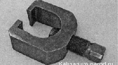 11. Съемник масляного фильтра. 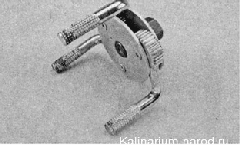 12. Универсальные трехзахватные съемники для снятия шкивов, ступиц, шестерен. 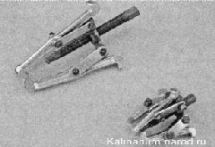 13. Универсальный съемник с узкими захватами для снятия муфт, шестерен, колец подшипников. Конструкция съемника позволяет комбинировать, устанавливая два или три захвата. 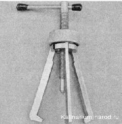 14. Приспособления для замены подшипников ступицы. В набор входит съёмник внутреннего кольца подшипника и устройство для извлечения и запрессовки подшипников ступиц. 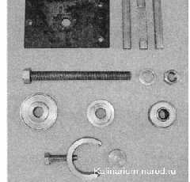 15. Съемник чашечный универсальный для извлечения и запрессовки подшипников ступиц и резинометаллических шарниров (сайлент-блоков) рычагов. 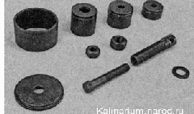 16. Съемник и оправка для замены маслосъемных колпачков. 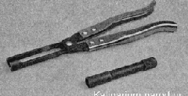 17. Набор для сжатия пружин и рассухаривания клапанов механизма газораспределения. 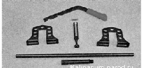 18. Приспособление для притирки клапанов. 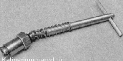19. Специальные накидной или торцовый ключи на 22 мм для отворачивания датчика концентрации кислорода. 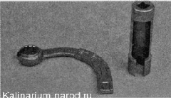
20. Пинцет. 21. Стяжки для пружин подвески. 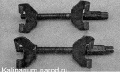22. Ударная отвертка с набором насадок. 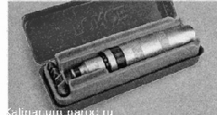
23. Цифровой мультиметр (тестер) для проверки датчиков и электрических цепей. 24. Специальный щуп или контрольная лампа на 12 В для проверки электрических цепей автомобиля, находящихся под напряжением. 25. Манометр для проверки давления в шинах {при отсутствии манометра на шинном насосе). 26. Манометр для измерения давления в топливной рампе двигателя. 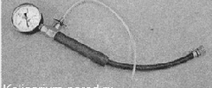
27. Манометр для проверки давления в системе смазки двигателя. 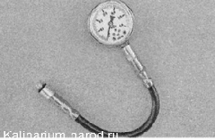28. Компрессометр для проверки давления в цилиндрах двигателя. 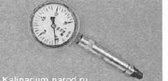
29. Нутромер для измерения диаметра цилиндров. 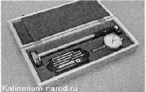 30. Штангенциркуль с глубиномером. 31. Микрометры с пределом измерений 0—25, 25—50 и 50—75 мм. 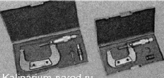32. Набор круглых щупов для проверки зазора между электродами свечей зажигания. Можно использовать комбинированный ключ для обслуживания системы зажигания с набором необходимых щупов. Ключ имеет специальные прорези для подгибания бокового электрода свечи. 33. Набор плоских щупов для измерения зазоров при оценке технического состояния агрегатов. 34. Оправка для центрирования ведомого диска сцепления. 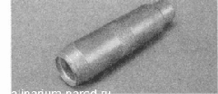
35. Технологическая оправкадля фиксации полуосевой шестерни дифференциала. Оправка устанавливается в отверстие коробки передач после демонтажа обоих приводов, чтобы полуосевые шестерни не выпали из дифференциала. 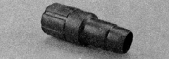 36. Оправка для обжима поршневых колец. 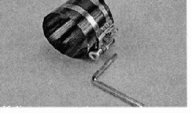
37. Ареометр для измерения плотности жидкости (электролита в аккумуляторной батарее или антифриза в расширительном бачке). 38. Специальное приспособление с металлическими щетками для ухода за клеммами проводов и выводами аккумуляторной батареи. 39 - Магнит на телескопической указке для извлечения мелких металлических предметов из труднодоступных мест. 40. Масляный шприц для заливки масла в картер коробки передач. Поскольку масло в коробке передач заменяется редко и заливается оно сверху через отверстие указателя уровня, вместо масляного шприца можно использовать воронку с надетой на нее пластмассовой трубкой длиной 50—60 см. 41. Шланг для перекачки топлива. Шланги можно использовать для удаления топлива из бака перед его снятием. 42. Широкая и узкая слесарные (металические) линейки для проверки плоскостей. 43. Приспособление для разборки стоек подвески. Приспособление состоит из двух элементов: внутренний элемент предназначен для удержания штока амортизатора (на 6 и 10 мм), а наружный — для отворачивания его гайки (на 17 и 22 мм). 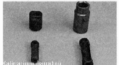44. Фен технический (термопистолет). Необходим для нагрева деталей при монтаже и демонтаже (например, термоусадочных трубок при ремонте электропроводки). 45. При выполнении работ также могут потребоваться: струбцина, рулетка, бытовой безмен, широкая емкость для слива масла и охлаждающей жидкости объемом не менее 10 л, медицинский шприц или груша для отбора жидкости. |